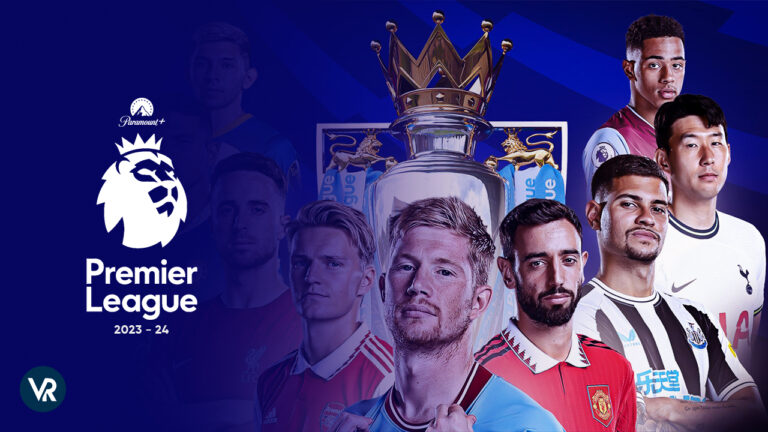

프리미어리그(영어: Premier League) 또는 잉글랜드 외의 지역에서 구분을 위해 잉글리쉬 프리미어리그(영어: English Premier League, EPL)는 1992년에 시작한 잉글랜드의 최상위 축구 리그이다. 프리미어리그는 스페인의 프리메라리가, 이탈리아의 세리에 A, 독일의 분데스리가, 프랑스의 리그 1과 함께 세계 5대 프로 축구 리그로 꼽히며, EFL 챔피언십과의 승강제가 이루어지고 있다. 매 시즌은 8월부터 5월까지 진행되며 홈 & 어웨이 방식으로 20개 클럽이 각 38경기씩 치르며 우승팀과 2~4위팀은 UEFA 챔피언스리그 본선에 직행하고 5위팀과 FA컵 우승팀은 UEFA 유로파리그에 출전하고 EFL컵 우승팀은 UEFA 유로파콘퍼런스리그에 진출하게 된다. 만약 FA컵, 리그컵 우승팀이 다음 시즌 챔피언스리그 진출권을 따내면, 유로파리그 진출권은 차순위팀에게 넘어간다. 하위3개팀은 다음시즌부터 2부리그인 EFL 챔피언십으로 강등되고, 반대로 EFL 챔피언십에서 우승한팀과 2위팀 그리고 3~6위간의 승격 플레이오프 승리팀이 다음시즌부터 프리미어리그로 승격하게 된다.
